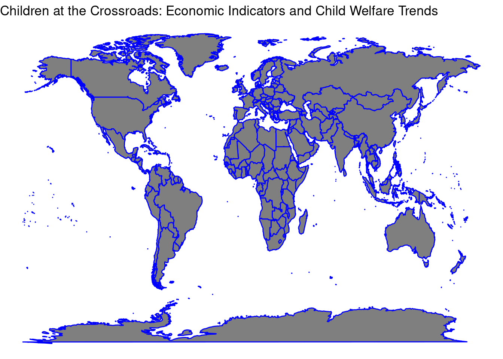

Children at the Crossroads: Economic Indicators and Child Welfare Trends
Economic Indicators and Child Welfare Trends
This visualization maps out a compelling global narrative, illustrating how GDP per capita—an essential economic indicator—is intertwined with child welfare across different nations. The map, shaded from yellow to deep red, reveals stark disparities: wealthier nations often exhibit better child welfare metrics, whereas regions with lower GDP per capita face greater challenges. This pattern underscores the profound impact of economic prosperity on children’s health and educational outcomes, suggesting that economic growth can be a vital component in fostering better living conditions for the youngest members of society. Yet, the map also prompts critical questions about the distribution of wealth and the inclusivity of growth. As we gaze across continents, it becomes evident that economic indicators do not just reflect fiscal status but are also a beacon, signaling the urgency for targeted developmental policies to ensure that every child can thrive, irrespective of their birthplace.
The Balance of Military Spending and Population in Child Welfare
“The Balance of Military Spending and Population in Child Welfare,” showcases military expenditure as a percentage of GDP across fifteen countries, selected from the latest available data. This visualization highlights the significant disparities in how nations allocate their financial resources to defense mechanisms, providing a stark depiction of global priorities. The diverse spectrum of colors represents each country uniquely, illustrating not just the variability in military expenditure, but also the broader economic backdrop against which these decisions are made. Countries with higher percentages of GDP dedicated to military spending may reflect differing security needs or policy priorities, but this raises pertinent questions about the potential trade-offs in other critical areas, such as education, healthcare, and child welfare services. For instance, in countries where a substantial proportion of national resources is funneled into defense, there might be less available for vital social services that underpin child development and welfare. This correlation suggests a compelling narrative: the allocation of a country’s budget reflects its priorities at a governmental level, and high military spending might come at the expense of investing in the future — the children. This graph serves not just as a representation of data but as a call to action. It invites policymakers, stakeholders, and the global community to reflect on the balance between ensuring national security and fostering a nurturing environment that prioritizes child welfare. By reevaluating spending priorities, nations can aim to strike a more balanced approach that does not overlook the pressing needs of the youngest members of society. The chart is more than a mere depiction of numbers; it is a narrative about choices, priorities, and the implications of these decisions on the welfare of children worldwide. As we move forward, it is crucial for each country to consider not just the immediate benefits of defense spending, but also the long-term impacts such investments have on societal health and child development.
Children at the Crossroads: Economic Indicators and Population Trends Over Time
“Children at the Crossroads: Economic Indicators and Population Trends Over Time,” we explore the relationship between Gross National Income (GNI) and total population across various countries over the past decade. By plotting GNI against population, we illuminate the economic capacity of nations relative to their demographic scale, providing insights into how financial resources might be allocated amidst growing or declining populations. Each point on this scatterplot represents a country’s yearly data from 2010 onwards, illustrating the dynamic economic trajectories and their potential implications on societal well-being and development. The addition of a linear regression line, shown in blue, helps in understanding the overall trend across the years. Generally, this trend can indicate whether higher incomes correlate with larger populations, suggesting a country’s economic growth alongside its capacity to support its inhabitants. This analysis serves a critical narrative about how nations manage their economic growth in relation to their population demands. In the context of child welfare, understanding these trends is crucial. Countries with rising GNI and controlled population growth might have better resources to allocate towards healthcare, education, and welfare services, directly impacting the quality of life for children. Conversely, countries with stagnating or decreasing GNI, coupled with large or rapidly growing populations, might face significant challenges in ensuring adequate child welfare. The visualization, devoid of any legends to focus solely on the data, uses varying colors to represent different countries. This not only adds a visual distinction but also allows us to track the economic and demographic changes of specific countries over the observed period. By examining these patterns, stakeholders and policymakers can better strategize on balancing economic development with demographic pressures, aiming to enhance child welfare outcomes in the long term. This plot not only narrates the story of economic indicators and population dynamics but also serves as a call to action. It highlights the need for effective policies that address both economic growth and population management as intertwined strategies crucial for sustainable development and child welfare.
Yearly changes in the percentage of children suffering from five deprivations
“Yearly changes in the percentage of children suffering from five deprivations,” we delve into the stark realities faced by children in various parts of the world as they grapple with multiple forms of deprivation. This time-series chart traces the trajectories of ten randomly selected countries, revealing trends over time in the prevalence of significant hardships among the youngest populations. The deprivation rate, represented by the percentage of children facing exactly five critical deprivations, serves as a poignant indicator of the underlying societal and economic conditions that influence child welfare. This analysis not only highlights the fluctuations within each country but also draws attention to broader regional and global trends. As these lines wend their way through the years, they illustrate not just the impact of economic policies and stability on child welfare but also reflect how international aid, government focus, and socio-economic strategies play pivotal roles in shaping the lives of these vulnerable groups. By monitoring these trends, policymakers, NGOs, and the international community can better understand where targeted efforts and resources are most urgently needed to lift children out of severe deprivation and offer them a brighter future. Through this chart, we see more than just numbers; we witness the ongoing challenges and slow progress in parts of the world where economic hardship often translates directly into diminished childhoods. This visualization compels us to consider the broader implications of economic indicators on child welfare trends and underscores the need for sustained, data-driven approaches to child advocacy and development.